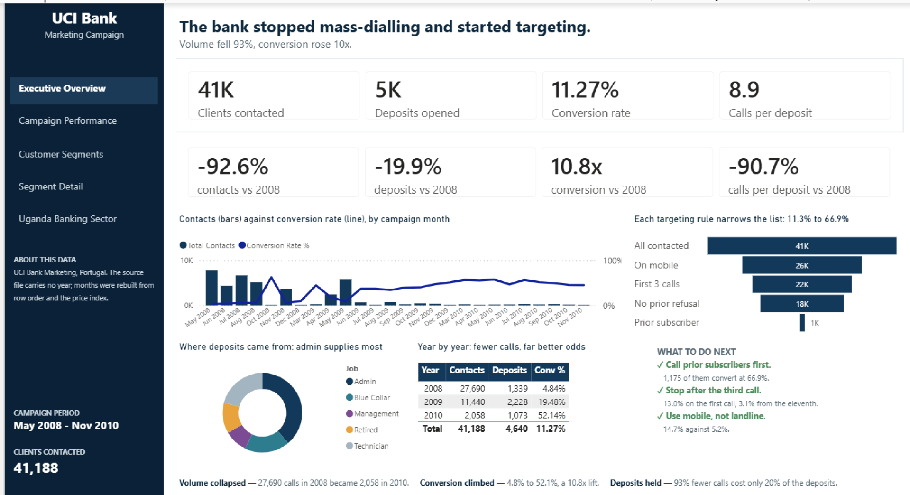
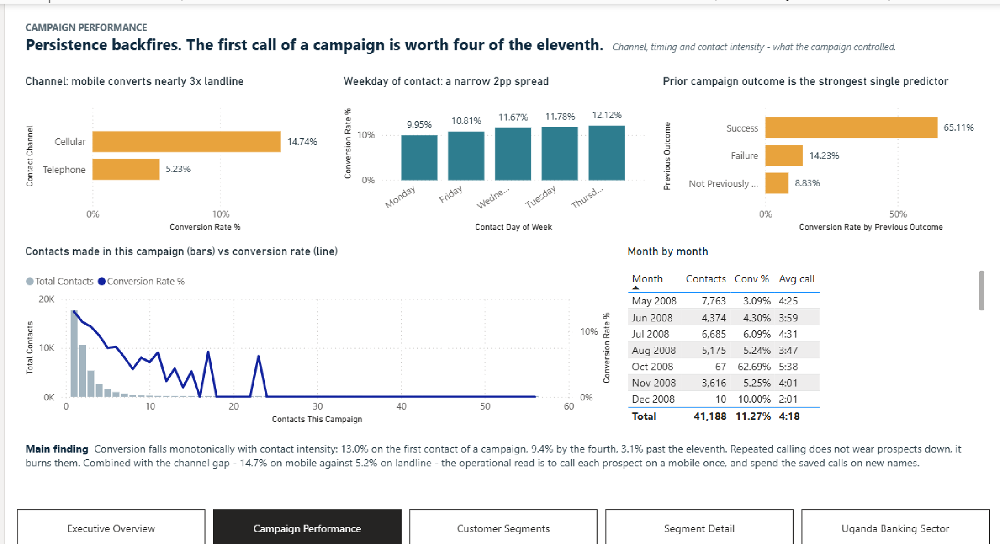
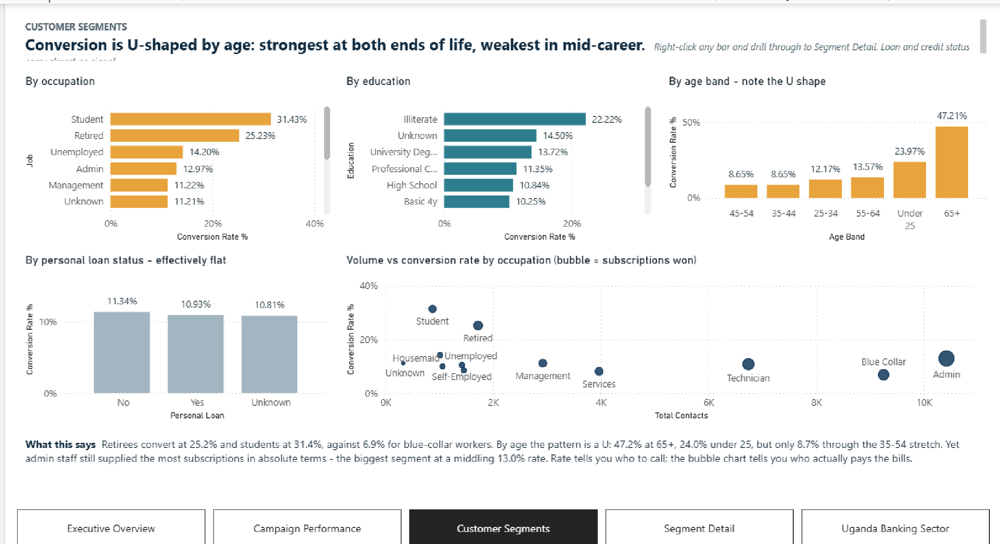
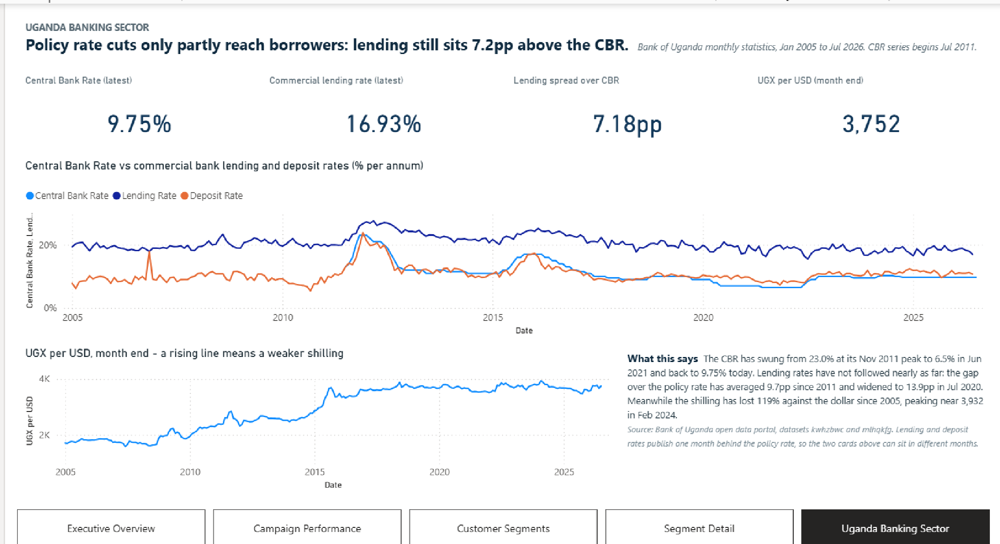

A Power BI project built on the UCI Bank Marketing dataset: 41,188 telemarketing contacts made by a Portuguese bank between May 2008 and November 2010, selling term deposits. A second, unrelated dataset covering Bank of Uganda monthly rates gives the campaign some macro context.

The whole project is in PBIP format — the semantic model as TMDL and the report
as PBIR JSON — so every measure, relationship and visual is plain text, reviewable
in a pull request and diffable line by line. Nothing here is locked inside a .pbix.
The bank stopped mass-dialling and started targeting.
| 2008 | 2009 | 2010 | |
|---|---|---|---|
| Clients contacted | 27,690 | 11,440 | 2,058 |
| Deposits opened | 1,339 | 2,228 | 1,073 |
| Conversion rate | 4.84% | 19.48% | 52.14% |
Contact volume fell 92.6% while deposits fell only 19.9%. Conversion rose 10.8×. Cutting 93% of the calls cost only 20% of the deposits.
The targeting funnel shows where the lift came from. Each stage is a strict subset of the one above it, so the bars can honestly be read as a funnel:
| Stage | Clients | Conversion |
|---|---|---|
| All contacted | 41,188 | 11.3% |
| On mobile | 26,144 | 14.7% |
| …within first 3 calls | 21,740 | 15.8% |
| …no prior refusal | 18,246 | 16.0% |
| …prior subscriber | 1,175 | 66.9% |
Three levers, in order of strength:
One honest caveat, stated on the report itself: call duration predicts the outcome strongly but is only known after the call, so it cannot be used to target.
bank-additional-full.csv records a month (may, jun, …) and a day_of_week,
but no year and no day of month. The UCI documentation says the rows are ordered
by contact date, spanning May 2008 to November 2010 — but the year is nowhere in the
data.
The recovery, implemented in the CampaignPeriods query:
cons.price.idx is a monthly national index. Across this file it turns out to be
a 1:1 natural key for the campaign month — 26 distinct values, no value shared
by two months, no month carrying two values.[month, cons.price.idx] therefore recovers exactly the 26 campaign
periods.This reproduces May 2008 → November 2010 exactly, with 7 months in 2008, 10 in 2009 and 9 in 2010. The gaps are real: no contacts in September 2008, nor in January or February of 2009 and 2010.
Load-order warning. Source order is the only evidence of the year. Never re-sort
CampaignContactsRawbefore its index column is added, or the years silently become wrong.
Five pages. Full detail in docs/report-pages.md.
The one-screen answer — headline figures with their change since 2008, the monthly trend, the targeting funnel, and three concrete actions. Shown at the top of this page.
What the campaign controlled: channel, weekday, prior outcome and contact intensity.

Who converts and who pays the bills — occupation, education, age, and a volume vs rate scatter. Right-click any bar to drill through to Segment Detail (a hidden drill-through page, not pictured because it is meaningless unfiltered).

Macro context on its own disconnected calendar, deliberately unrelated to the Portuguese campaign.

Bank Marketing.pbip project entry point - open this
Bank Marketing.SemanticModel/ TMDL: tables, measures, relationships, M queries
Bank Marketing.Report/ PBIR: pages, visuals, theme
data/
bank-additional-full.csv UCI Bank Marketing, 41,188 rows
bank-additional-names.txt UCI's own column documentation
BOU_Uganda_Monthly.csv Bank of Uganda monthly rates, 1,474 rows
README.md provenance, quirks and sentinels
docs/
report-pages.md every page, what it answers, screenshots
semantic-model.md tables, columns, relationships
measures.md all 46 measures, generated from the TMDL
findings.md the analysis, with every figure verified
screenshots/ one PNG per visible page
tools/
validate_pbip.py offline validator - run after any edit
Requires Power BI Desktop (November 2025 or later — the report uses the modern card visual, which went GA in that release).
Bank Marketing.pbip.DataFolder, which is checked in pointing at the author's machine. Change
it to wherever you cloned the repo:Home → Transform data → Manage parameters → DataFolder → set to the repo root,
e.g. C:\code\bank-marketing-powerbi. Then Refresh.
Every query builds its path from that one value, so this is the only thing you need to change.
Alternatively, edit DataFolder directly in
Bank Marketing.SemanticModel/definition/expressions.tmdl before opening.
| File | Rows | Source |
|---|---|---|
data/bank-additional-full.csv |
41,188 | UCI Machine Learning Repository |
data/bank-additional-names.txt |
— | UCI's own column documentation |
data/BOU_Uganda_Monthly.csv |
1,474 | Bank of Uganda open data portal |
UCI Bank Marketing. Moro, S., Rita, P. and Cortez, P. (2014). Bank Marketing
[Dataset]. UCI Machine Learning Repository. https://doi.org/10.24432/C5K306.
Licensed CC BY 4.0. The file here is bank-additional-full.csv — semicolon
delimited, every text value quoted.
Bank of Uganda. Monthly interest and exchange rates pulled from the Knoema-hosted
open data portal at cb-uganda.opendataforafrica.org (no authentication required;
send a browser User-Agent). Six series: Central Bank Rate, commercial lending and
deposit rates, the overall interbank rate, and UGX/USD period-average and period-end.
Two honest notes about the Uganda data, both surfaced on the report:
The campaign data (Portugal, 2008–2010) and the Uganda data (2005–2026) are deliberately not related to each other. They sit on two disconnected date tables, because forcing them onto one calendar would leave both mostly empty. Each table's description says so.
9 tables, 46 measures, 6 relationships — all many-to-one, single-direction.
Campaign star. FactCampaignContact (41,188 rows, one per client contacted)
joined to DimDate, DimJob, DimEducation, DimAgeBand.
Uganda star. FactUgandaIndicator (1,474 rows, one per indicator per month)
joined to DimUgandaMonth and DimIndicator.
Disconnected. DimFunnelStage drives the targeting funnel via SWITCH, since
the stages are cumulative filters rather than a column in the data.
_Measures holds every measure. Folders are numbered so they sort in reading
order — see docs/measures.md and docs/semantic-model.md.
Two conventions worth knowing before editing:
CALCULATE(..., REMOVEFILTERS()) so clicking a bar or a table row cannot silently
rewrite the headline. Charts stay fully cross-filterable; only the headline is
pinned. Use Total Contacts (responsive) rather than Clients Contacted (pinned)
anywhere a figure should follow the filters.BLANK() rather than a misleading number at
the edges — a spread is blank in months where either leg has not published, the
first-to-last-year deltas are blank when only one year is in view, and the mm:ss
duration is blank for months with no calls so empty rows drop out of tables.python tools/validate_pbip.py
Exit 0 means clean. It runs offline — no Power BI needed — and checks that:
lineageTag into the code and
Power BI refuses the filereportVersionAtImportRun it after any edit, and always after a rename.
Things that cost real time here, recorded so they cost you less:
// comments are rejected in relationships.tmdl at any position or
indentation. Put the note on the column instead.source =
bodies at four tabs with properties at three. Match that.queryState roles and unknown format properties are silently ignored —
a wrong name never announces itself, the visual just renders without that binding.fontSize
in the JSON. Size cards by geometry, not font size.text and outline from PBIR (only fill applies), so the
navigation captions here are drawn by textboxes with a transparent button on top as
the click target.Code and report definitions: MIT.
The UCI Bank Marketing dataset is © its authors under CC BY 4.0 and is redistributed here under that licence with the citation above. Bank of Uganda figures are public data from the Bank of Uganda open data portal. This project is a portfolio exercise and is not affiliated with, endorsed by, or a product of any bank.